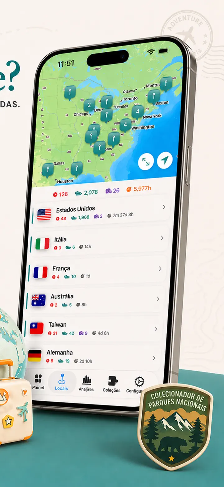
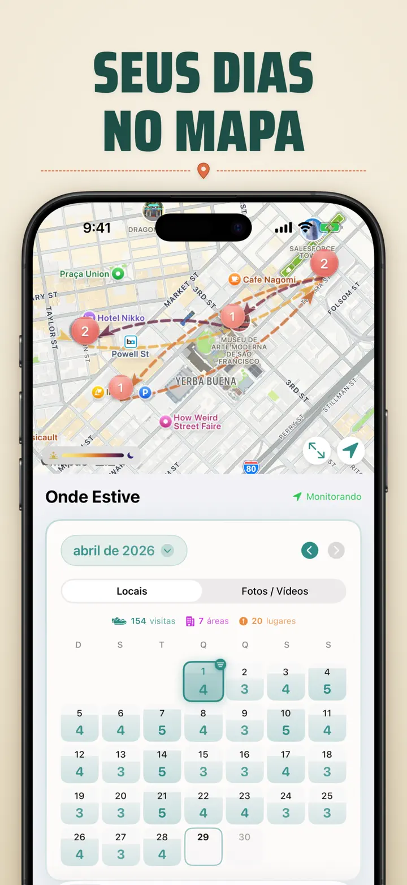
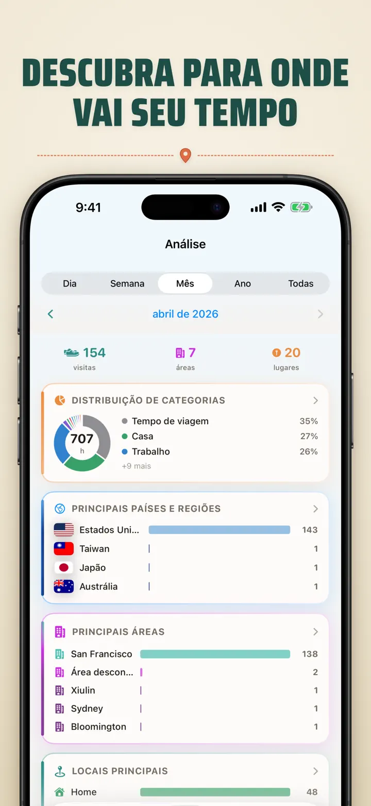
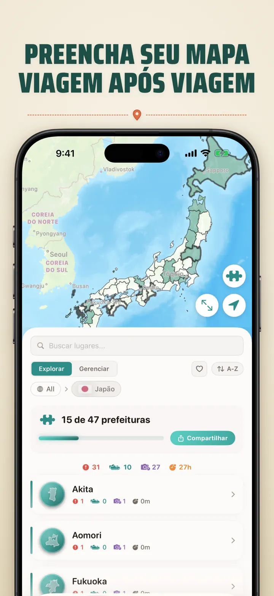
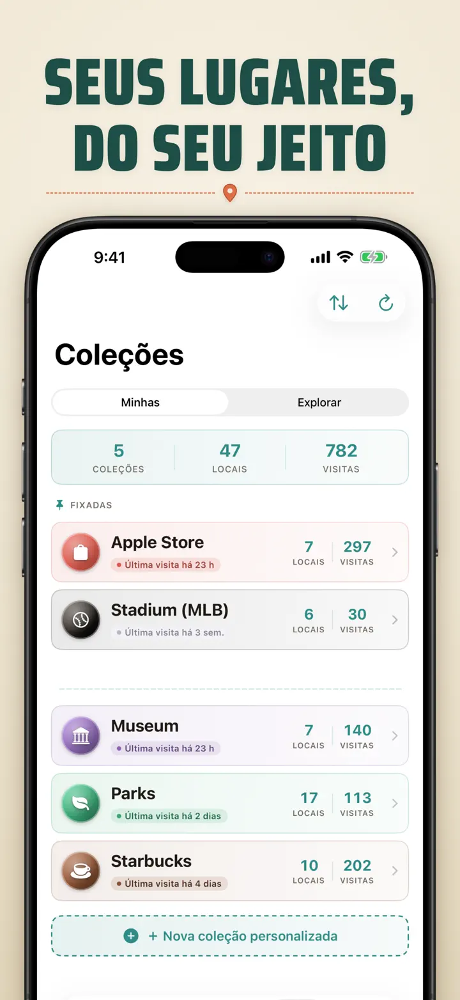
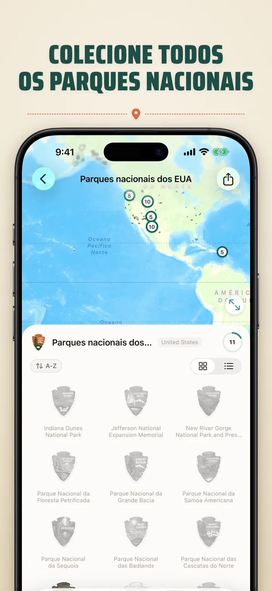
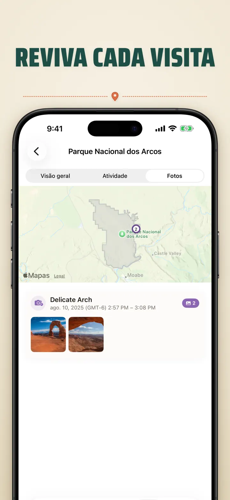

Onde Estive
Lugares, fotos e progresso
Novo: os 103 santuários Ichinomiya do Japão, cada um com seu emblema entalhado. Rastreamento automático de visitas e linha do tempo privada, tudo no seu aparelho.
Baixar na App StoreSobre o app
Onde Estive — Sua Memória de Localização Pessoal
Quer lembrar daquele restaurante incrível do mês passado? Ou saber quanto tempo você passa no trabalho versus em casa? Onde Estive rastreia suas visitas e cria uma linda linha do tempo da sua jornada.
RASTREAMENTO AUTOMÁTICO
Sem registro manual. O app registra silenciosamente quando você chega e sai dos lugares, criando um histórico detalhado sem nenhum esforço.
VISUALIZAÇÃO EM CALENDÁRIO
Veja suas visitas por dia, semana ou mês. O calendário mostra contagens de visitas e lugares únicos. Toque em qualquer dia para ver onde você estava.
WIDGETS DE TELA DE INÍCIO E BLOQUEIO
Veja suas visitas recentes com o widget médio da tela de início. Os da tela de bloqueio mostram sua localização atual, um cronômetro de permanência em tempo real ou as visitas de hoje — toque para abrir o app.
LOCAIS ORGANIZADOS
Os locais são agrupados por região e cidade. Atribua categorias como Casa, Trabalho, Academia ou Café. Crie as suas com ícones e cores.
ANÁLISES PODEROSAS
Descubra padrões na sua vida:
- Distribuição de tempo entre categorias
- Seus lugares mais visitados
- Análise de ritmo semanal
- Tendências de frequência de visitas
- Tempo de permanência por local — dia, semana, mês ou ano
COLEÇÃO DE REGIÕES POR PAÍS
Transforme suas viagens em um quebra-cabeça! Veja quantos estados, províncias ou regiões você visitou em cada país. Compartilhe o progresso como imagem.
PROGRESSO EM PARQUES NACIONAIS
Para a aventura! Registre suas visitas a parques nacionais ao lado dos seus locais do dia a dia.
100 CASTELOS FAMOSOS DO JAPÃO
Viajando pelo Japão? Uma coleção integrada rastreia suas visitas aos 100 castelos famosos do país. Encontre em Coleções → Explorar → Japão.
COLEÇÕES PERSONALIZADAS
Apple Stores, museus, cervejarias, livrarias — rastreie o que quiser. Defina palavras-chave e ela se preenche sozinha. Adicione ou remova na mão. Contagem, histórico e mapa para cada uma.
IMPORTE SEU HISTÓRICO DE LOCALIZAÇÃO
Vindo de outro app? Traga todo o seu histórico — o formato é detectado automaticamente, exportações grandes são suportadas e você vê uma prévia antes de importar qualquer coisa:
- Google Timeline (exportação do Google Maps ou Google Takeout)
- Arc Timeline (os arquivos .json mensais que você exporta do Arc)
- Moves (backup do ProtoGeo / Facebook Moves)
GERENCIAMENTO EM MASSA
Gerencie todos os seus locais em um só lugar. Pesquise, ordene e filtre. Selecione vários para categorizar ou excluir em massa.
PRIVACIDADE EM PRIMEIRO LUGAR
Seus dados de localização ficam no seu dispositivo. Sem contas, sem servidores. Seus deslocamentos são assunto seu.
PERFEITO PARA:
- Rastrear horas e locais de trabalho
- Lembrar restaurantes e lojas visitados
- Analisar sua rotina diária
- Manter um diário de viagens e registrar parques nacionais
- Relatórios de despesas e quilometragem
- Entender sua alocação de tempo
RECURSOS:
- Detecção automática de chegada e saída
- Visualização em calendário com linha do tempo diária
- Widgets de tela de início e bloqueio com links diretos
- Agrupamento de locais por região e cidade
- Categorias personalizadas com ícones e cores
- Sugestões inteligentes do Apple Maps
- Histórico detalhado de visitas com duração
- Tempo de permanência por local (dia/semana/mês/ano)
- Painel de análises
- Pesquisa e filtro de locais
- Regiões por país com imagem de quebra-cabeça
- Acompanhamento em parques nacionais
- Coleção integrada dos 100 castelos famosos do Japão
- Coleções personalizadas com palavras-chave automáticas, edição manual e estatísticas
- Gerenciamento em massa de locais
- Importação do Google Timeline, Arc Timeline e Moves
- Recursos de exportação
- Sem necessidade de conta
- Design focado na privacidade
Comece hoje sua memória de localizações. Baixe Onde Estive e nunca mais esqueça onde esteve.
Privacy Policy: https://masawata.net/privacy-policy.html Terms Of Service: https://www.apple.com/legal/internet-services/itunes/dev/stdeula/
Capturas de tela







Onde Estive
Novo: os 103 santuários Ichinomiya do Japão, cada um com seu emblema entalhado. Rastreamento automático de visitas e linha do tempo privada, tudo no seu aparelho.
Baixar na App Store